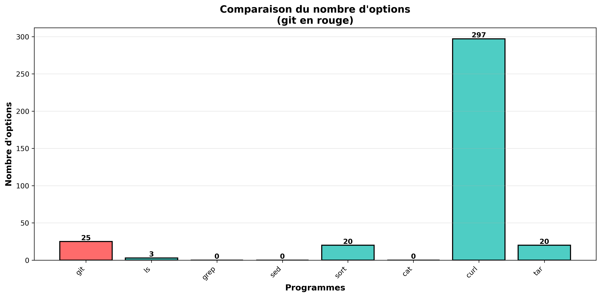
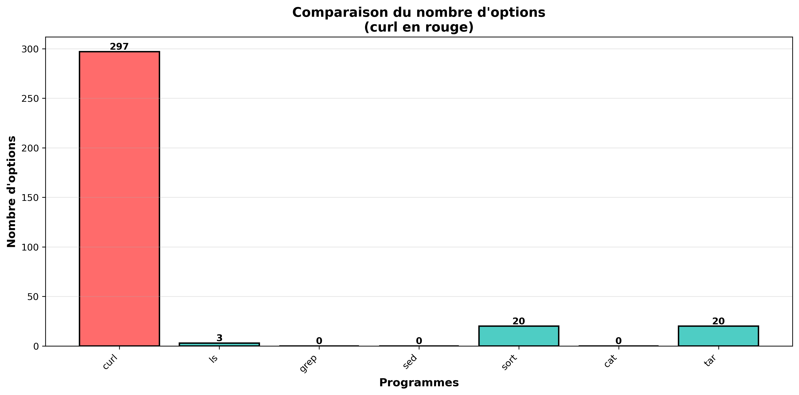

Cartographie et analyse des lignes de commande
Interrogez notre base de données pour connaître la complexité d'un programme selon son environnement et sa version.
Téléchargez l'interface graphique Python pour analyser dynamiquement le nombre d'options d'un programme en ligne de commande directement depuis votre machine.
⬇ Télécharger l'interface (.zip)Consultez notre rapport de recherche détaillant la méthodologie de l'analyse dynamique des interfaces en ligne de commande.
Si le PDF ne s'affiche pas, cliquez ici pour le télécharger.
Analyse de la commande Git

Analyse de la commande Curl
